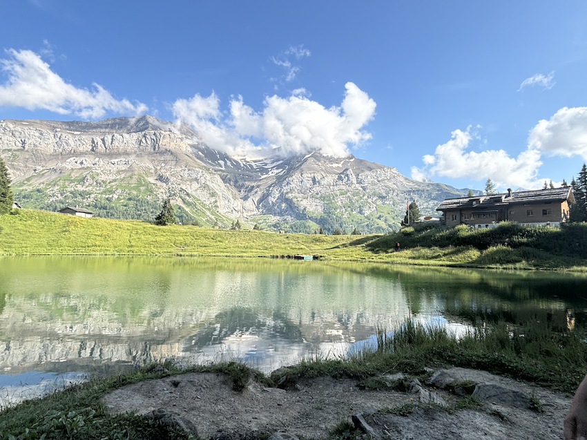
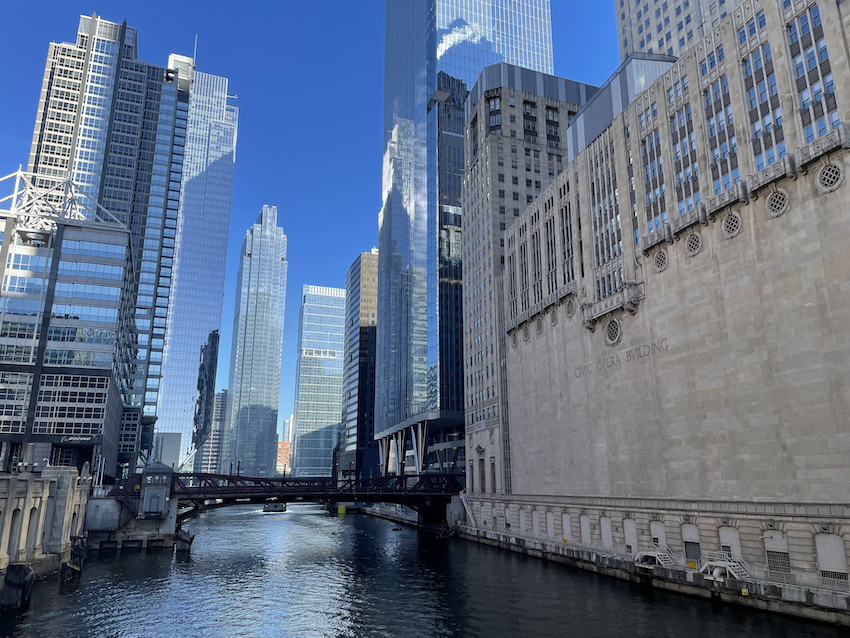
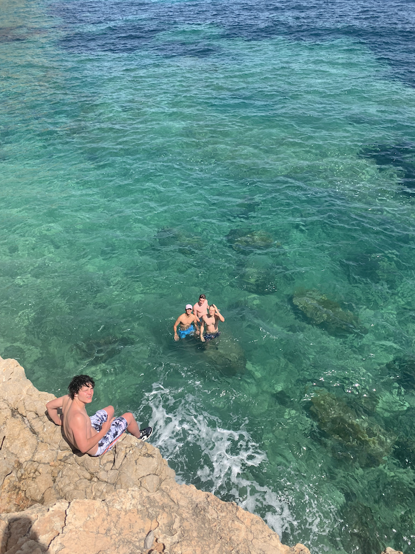
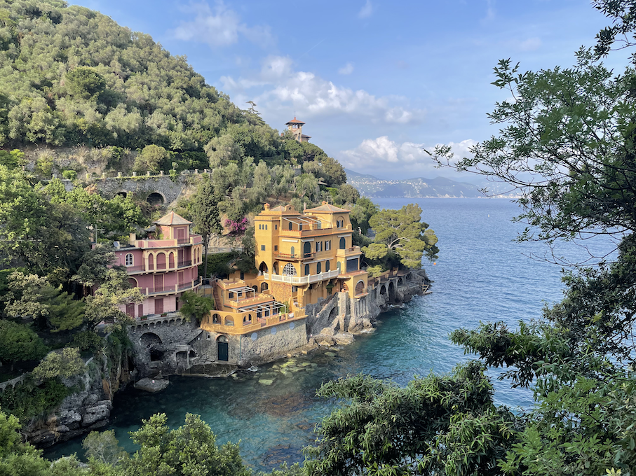

About Me
I am a 3rd year student majoring in Business and ITM. I am originally from Poland. I have lived in 5 different countries.
Countries I have Lived In:
- Germany
- Russia
- Poland
- Switzerland
- 
- USA (current)
- 
Hobbies
- Soccer - Soccer has always been a very important part of my life. I inherited the passion from various family memebers but mostly from my brother and my dad. Since I can remember, my dad and my uncle would take me and my brother to various Polish national team games. We would often travel around Europe to go see a game, from which I have some of my favorite memories.
- Skiing - Growing up in Germany, we lived close to the Swiss alps, therefore, we often drove to the slopes there. I learned skiing at a very young age. After we moved out of Germany we made yearly ski trips a family tradition. We would usually go to Austria for a couple of days, once a year.
- Fitness - I try to work out as often as possible. It is my favorite way of elevating my mood. As of now I can't always stay consistent with the gym due to having soccer practices and school work, but after graduating and no longer playing on a competetive level, I believe that the gym will be my main form of staying fit.
- Video Games - Recently I haven't been spending much time on video games due to a tight schedule, however throughout my childhood me and my brother grinded every FIFA. The first FIFA game I played was FIFA 08. Other than that I have enjoyed playing games such as Elden Ring, Football Manager, and back in the day CS-GO
- Travelling - I love to visit new places, and experience new cultures. My favorite memory was spending a month backpacking around Europe with my friends after graduating from highschool. We visited 10 different countries. As of now my dream destinations are Tokyo and Seoul, and I would love to go backpacking again but this time around Asia.
- 
- 